Molding and Casting
Create the Mold
- Create the mold
- Make casts(resin) from mold
Assignment
For our assignment, we'll continue off from the 3D CNC segment, casting our mold from the machined foam.
The mold rubber that I'll be using is Smooth On's Mold Cast 30.
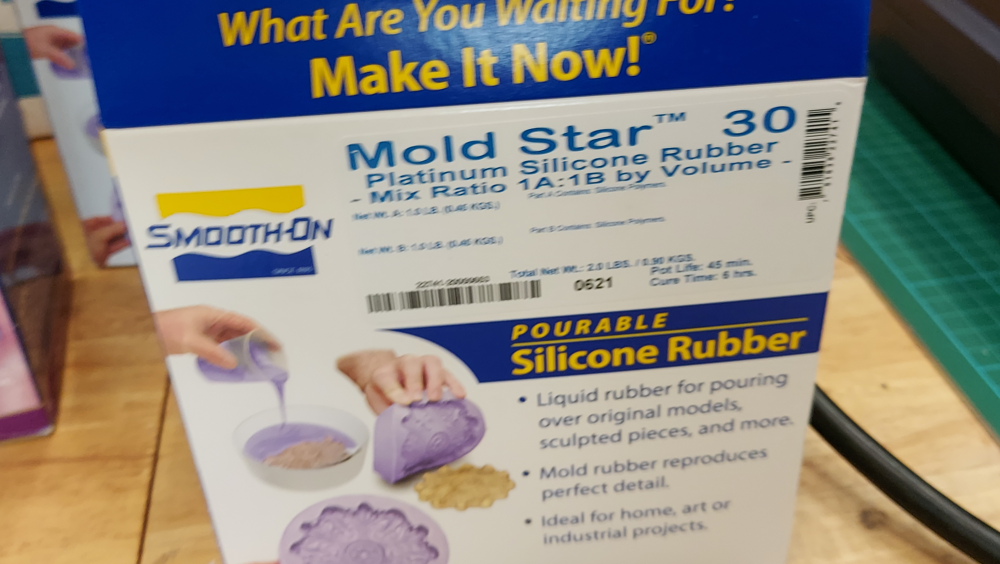 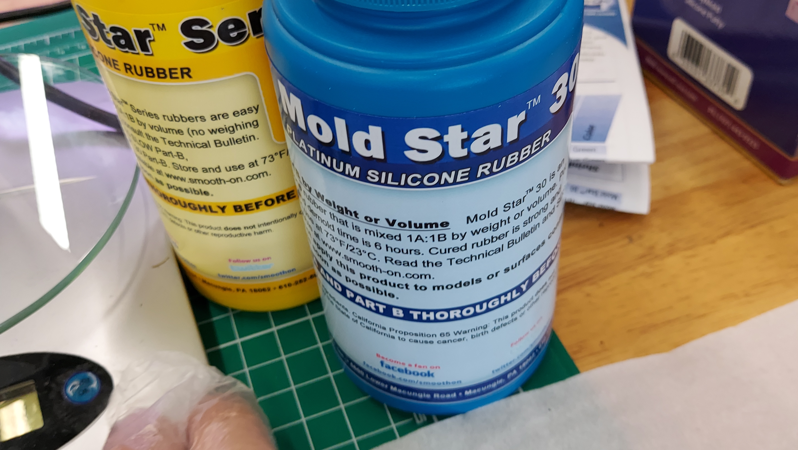Referring to the technical data
The technical data is availabe at https://www.smooth-on.com/tb/files/MOLD_STAR_15_16_30_TB.pdf
I'll check the technical data to read up about important information such as the cure time, mixing ratio:
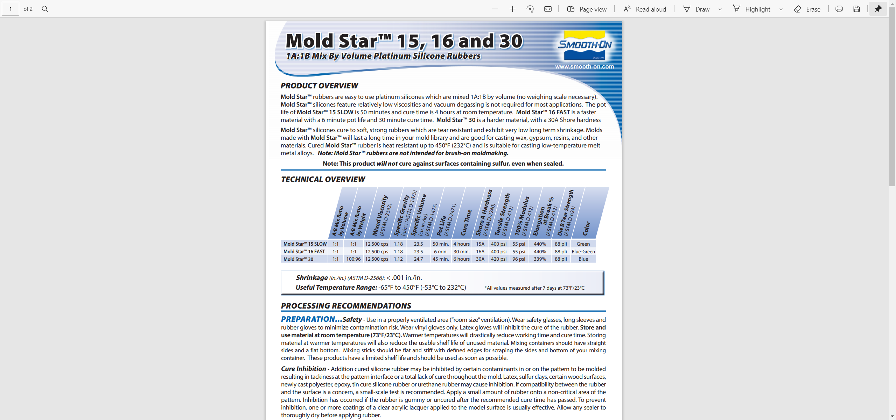 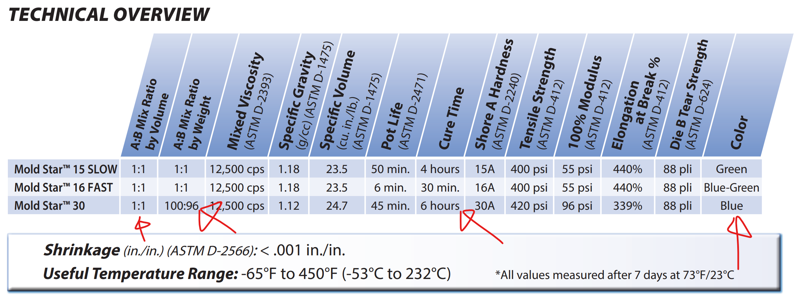From the technical overview table, we can see that A:B mix volume is 1:1. In the package, there are 2 containers, 1 named 'A' and another 'B'. If I was to eyeball it, I'll have to add them at 1 to 1 ratio. However, I'll use a weighing scale instead, this will allow it to be much more accurate as compared to the Mk 1 eyeball.
To the right, we can see that the mix ratio by weight is 100:96. This is due to different densities for A and B, B is denser. We'll have to keep this in mind when creating our mixture.
It will take 6 hours for the and our resultant mixture will be blue in color.
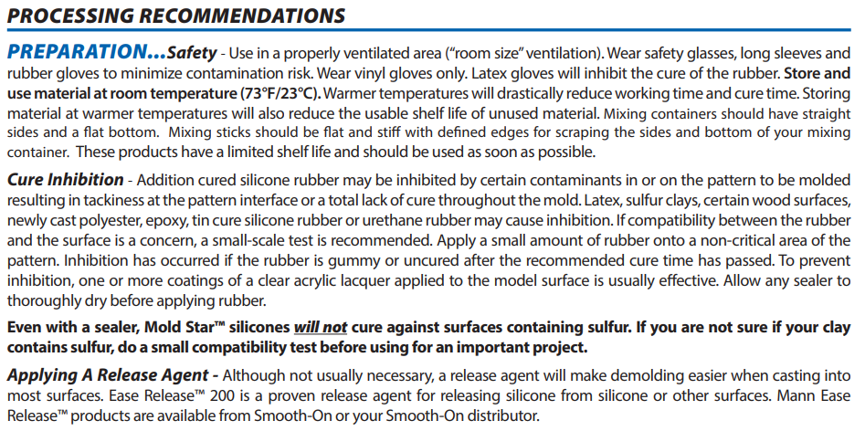We'll start by using spraying some releasing agent onto our machined block of foam. This will make removing the mold later easier.

Preparing the mixture:
I first started by placing a styrofoam cup on the weighing scale. I then shaked both containers.
We then mixed the 2 combinations, adding A at the determined weight followed by B.
I then mixed the mixture, aiming to create a mixture with a constant colour with no streaks.

We then place the cup containing the mixture inside an expander machine. The pressure inside will decrease, causing any air inside the mixture to come out.
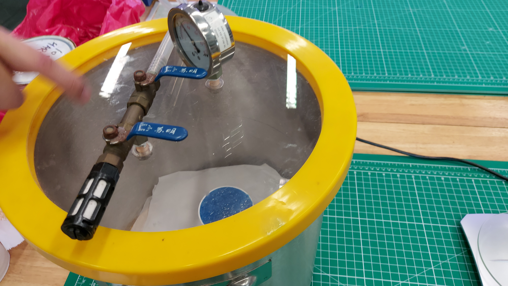Here's a video showing the mixture inside the expander machine degassing.
After degassing, I poured the mixture into the foam, starting the at the lowest point.
I then left it over the weekend for it cure.
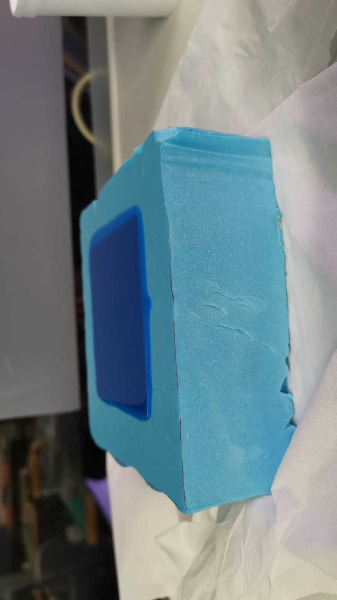 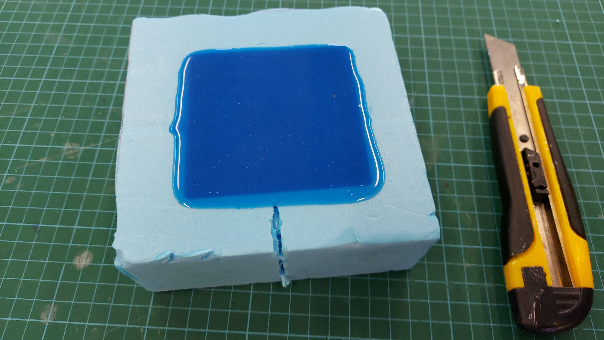
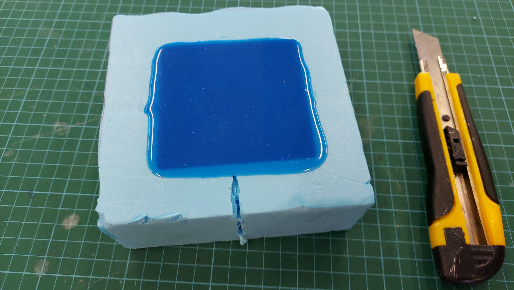


 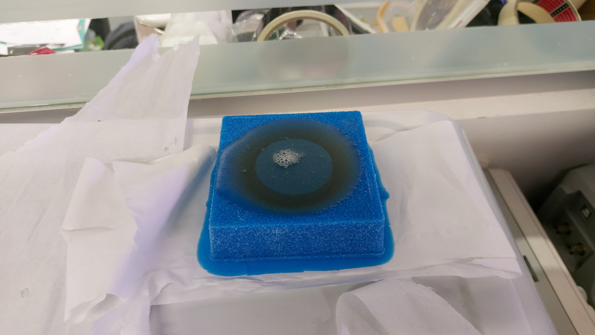
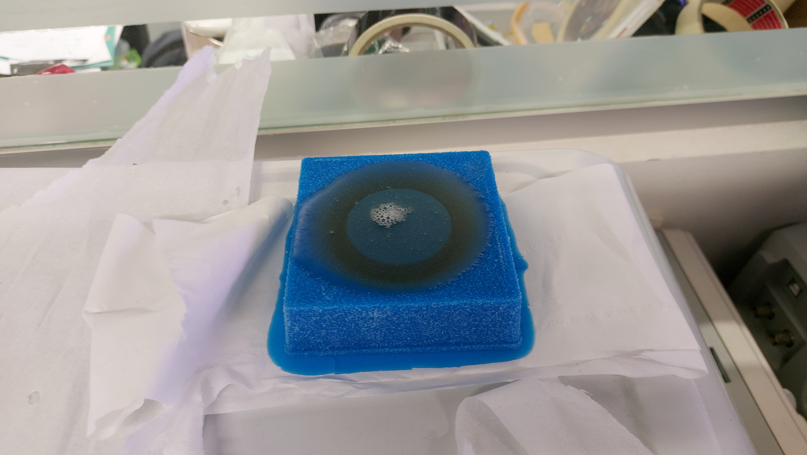


pot life cure time mix ratio by weight must be sure that the mold can withstand the temperature of the material being casted if food product make sure mold is foodsafe use of molds in foods such as chocolate, mold shapes the chocolate bar shape pour material in the lowest part of the material to minimise bubbles how to remove ze thing from the mold angle the walls, use lubricant before slippering 50mm thickness 60-75mm size https://www.smooth-on.com/products/oomoo-25/